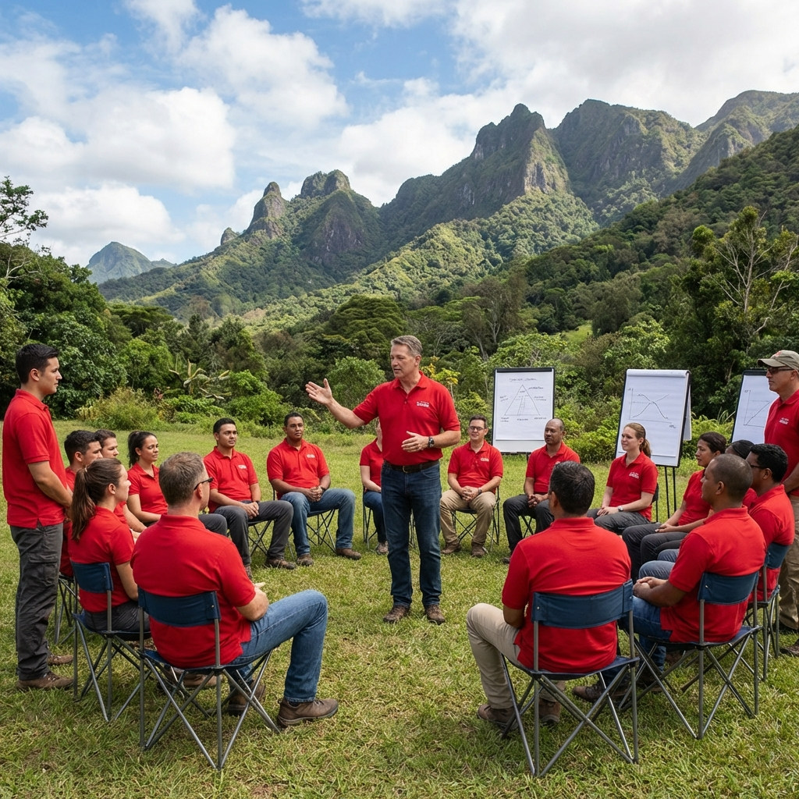
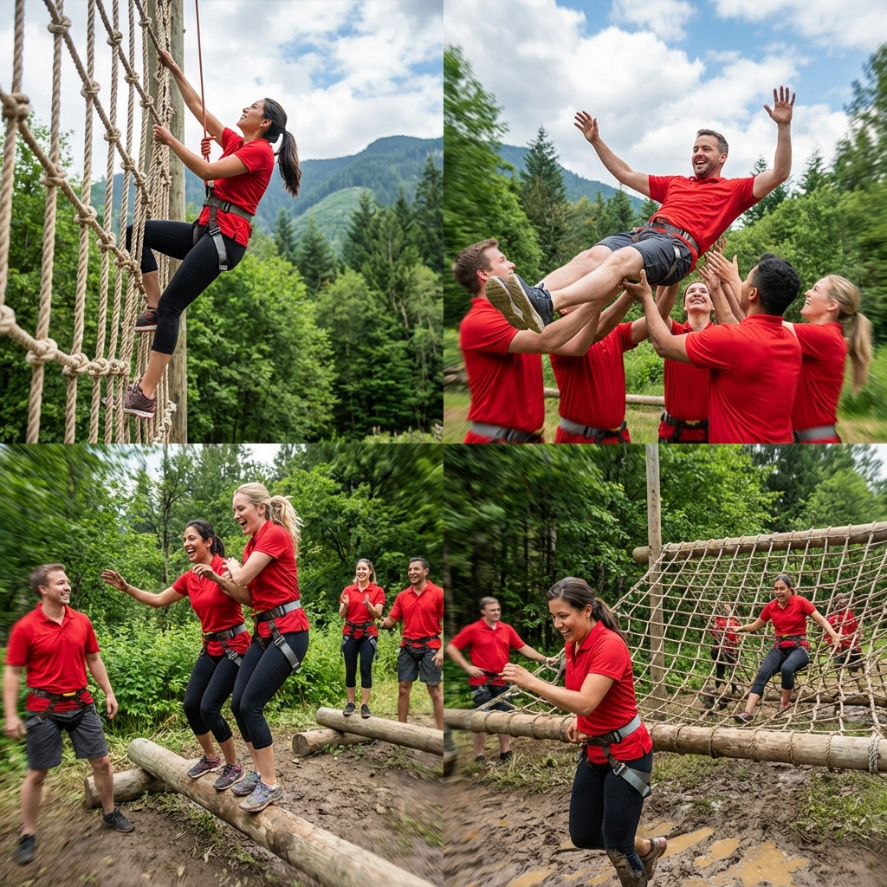
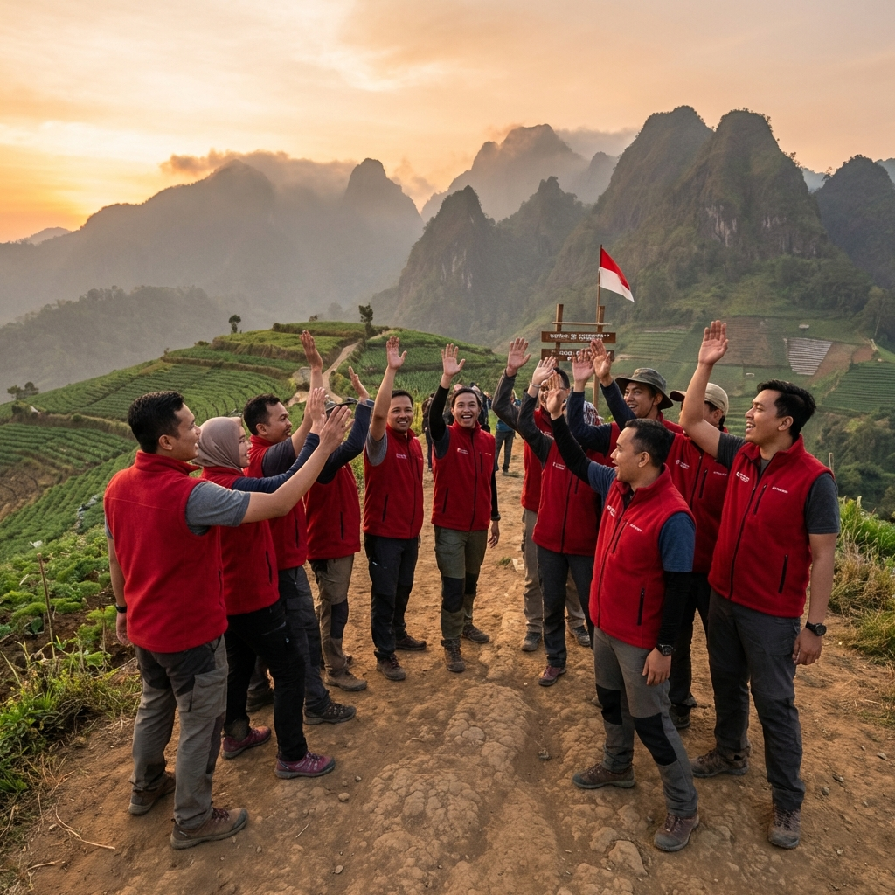

Di tengah persaingan bisnis yang semakin ketat, pengembangan leadership karyawan menjadi investasi strategis yang tidak bisa ditawar. Berbagai metode pelatihan telah diterapkan — dari seminar, workshop, hingga e-learning — namun outbound effective leadership secara konsisten menunjukkan efektivitas yang lebih tinggi dalam menghasilkan perubahan perilaku kepemimpinan yang berkelanjutan.
Artikel ini akan mengupas secara mendalam alasan-alasan ilmiah dan praktis mengapa metode outbound menjadi pilihan terbaik untuk pengembangan leadership karyawan, didukung oleh data riset dan pengalaman Gemilang Katun Outbound dalam menyelenggarakan ratusan program di Batu Malang.
Landasan Teoritis: Experiential Learning
Efektivitas outbound leadership berakar pada teori Experiential Learning yang dikembangkan oleh David Kolb. Teori ini menyatakan bahwa pembelajaran yang paling efektif terjadi melalui siklus empat tahap: pengalaman konkret, observasi reflektif, konseptualisasi abstrak, dan eksperimentasi aktif.
Outbound leadership menerapkan siklus ini secara natural. Peserta mengalami situasi nyata (concrete experience) melalui aktivitas outdoor, kemudian merefleksikan apa yang terjadi (reflective observation), menarik prinsip-prinsip leadership (abstract conceptualization), dan menerapkannya kembali di aktivitas selanjutnya (active experimentation).
"Tell me and I forget. Show me and I remember. Involve me and I understand." — Benjamin Franklin. Outbound leadership mewujudkan prinsip keterlibatan aktif ini secara sempurna.
Piramida Pembelajaran dan Retensi Pengetahuan
Menurut National Training Laboratories, tingkat retensi pembelajaran melalui ceramah hanya 5%, membaca 10%, audio-visual 20%, demonstrasi 30%, diskusi kelompok 50%, praktik langsung 75%, dan mengajarkan orang lain 90%. Outbound leadership mengkombinasikan praktik langsung, diskusi kelompok, dan peer teaching — mencapai retensi optimal 75-90%.
Inilah mengapa peserta outbound leadership mampu mengingat dan menerapkan pembelajaran jauh lebih baik dibandingkan mereka yang hanya mengikuti seminar atau membaca buku tentang kepemimpinan. Gemilang Katun Outbound merancang setiap program dengan memaksimalkan aktivitas praktik langsung dan refleksi kelompok.
Faktor-Faktor yang Membuat Outbound Efektif
1. Mengeluarkan Peserta dari Zona Nyaman
Lingkungan outdoor yang berbeda dari rutinitas kantor secara alami mengeluarkan peserta dari zona nyaman mereka. Ketika berada di luar zona nyaman, otak manusia menjadi lebih aktif dan reseptif terhadap pembelajaran baru. Peserta tidak hanya mendengar teori tentang kepemimpinan — mereka merasakannya langsung melalui tantangan yang membutuhkan respons real-time.
Di Batu Malang, lingkungan alam pegunungan yang berbeda drastis dari lingkungan perkantoran menciptakan cognitive disruption yang positif. Peserta dipaksa untuk beradaptasi, berpikir kreatif, dan menunjukkan potensi kepemimpinan yang mungkin tidak pernah muncul di setting kantor biasa.
2. Pembelajaran Holistik: Otak, Hati, dan Tubuh
Berbeda dengan pelatihan konvensional yang umumnya hanya melibatkan aspek kognitif (otak), outbound leadership melibatkan tiga dimensi sekaligus: kognitif (strategi, analisis), afektif (emosi, motivasi, empati), dan psikomotorik (kemampuan fisik, koordinasi). Pembelajaran yang melibatkan ketiga dimensi ini menghasilkan perubahan yang lebih mendalam dan bertahan lama.
Ketika seorang karyawan merasakan ketakutan saat melakukan high ropes kemudian berhasil mengatasinya, ia mengalami transformasi emosional yang tidak bisa diperoleh dari membaca buku tentang keberanian. Pengalaman ini terinternalisasi menjadi part dari identitas kepemimpinannya.
Baca Juga
3. Umpan Balik Langsung dan Otentik
Dalam outbound leadership, umpan balik terjadi secara natural dan instan. Jika seorang pemimpin memberikan instruksi yang tidak jelas, timnya akan gagal menyelesaikan tantangan — hasilnya terlihat langsung. Tidak ada tempat untuk berpura-pura atau menghindari tanggung jawab. Transparansi ini mempercepat proses pembelajaran dan self-awareness.
Fasilitator Gemilang Katun Outbound terlatih untuk memandu proses refleksi yang konstruktif, membantu peserta mengidentifikasi pola perilaku kepemimpinan mereka dan merancang rencana pengembangan yang spesifik dan actionable.
4. Mengungkap Dinamika Tim yang Sesungguhnya
Lingkungan outbound mengungkap dinamika tim yang sebenarnya — yang sering tersembunyi di balik formalitas kantor. Siapa yang natural menjadi pemimpin, siapa yang lebih efektif sebagai eksekutor, bagaimana konflik diselesaikan, dan siapa yang cenderung mendominasi atau menarik diri — semua terlihat jelas dalam setting outbound.
Insight pembuka mata ini sangat berharga bagi manajemen HR dalam merancang strategi pengembangan SDM yang tepat sasaran. Banyak klien Gemilang Katun Outbound melaporkan bahwa mereka menemukan potensi leadership tersembunyi di karyawan-karyawan yang selama ini tidak menonjol di lingkungan kantor.

Data dan Riset Efektivitas Outbound Leadership
Berbagai riset telah membuktikan efektivitas outbound leadership dibandingkan metode pelatihan konvensional:
- Journal of Applied Psychology (2023): Program outdoor leadership training meningkatkan skor kompetensi kepemimpinan rata-rata 43% setelah 6 bulan, dibandingkan 18% untuk program seminar tradisional
- Harvard Business Review: 87% peserta outbound leadership melaporkan perubahan positif dalam gaya kepemimpinan mereka
- Data internal Gemilang Katun (2020-2025): 94% klien melihat peningkatan produktivitas tim dalam 3 bulan pasca program outbound leadership
- Gallup Research: Tim dengan pemimpin yang dilatih melalui experiential learning memiliki tingkat engagement karyawan 31% lebih tinggi
Studi Kasus: Keberhasilan Outbound Leadership di Batu Malang
Salah satu contoh keberhasilan program outbound effective leadership yang diselenggarakan oleh Gemilang Katun Outbound adalah program untuk PT Karya Mandiri, sebuah perusahaan manufaktur dengan 300 karyawan. Sebelum program, perusahaan menghadapi masalah tingginya turnover di level supervisor (22% per tahun) dan rendahnya skor engagement karyawan (3.1 dari 5).
Setelah mengikuti program outbound leadership selama 3 hari di Batu Malang yang dirancang khusus untuk jajaran supervisor dan middle management, hasilnya sangat signifikan:
- Turnover supervisor turun menjadi 8% dalam 12 bulan
- Skor engagement karyawan meningkat menjadi 4.2 dari 5
- Produktivitas lini produksi meningkat 15%
- Keluhan karyawan terkait komunikasi manajemen turun 60%

Cara Memaksimalkan Efektivitas Outbound Leadership
Assessment Pra-Program
Lakukan assessment terhadap kondisi tim dan kebutuhan pengembangan leadership sebelum merancang program. Assessment ini bisa berupa survei organisasi, interview dengan manajemen, atau 360-degree feedback. Hasilnya akan menjadi dasar untuk menyesuaikan konten dan aktivitas outbound agar tepat sasaran. Gemilang Katun Outbound menyediakan layanan assessment gratis sebagai bagian dari paket program.
Program Berkelanjutan, Bukan One-Shot
Riset menunjukkan bahwa program yang berkelanjutan menghasilkan dampak 3x lebih besar dibandingkan kegiatan one-off. Idealnya, outbound leadership dilakukan 2-4 kali per tahun dengan tema yang progresif. Gemilang Katun menawarkan paket program tahunan dengan diskon khusus dan tracking perkembangan peserta dari sesi ke sesi.
Integrasi dengan Program Pengembangan Workplace
Outbound leadership akan paling efektif jika diintegrasikan dengan program pengembangan workplace lainnya seperti coaching, mentoring, dan performance management. Pembelajaran dari outbound harus diterjemahkan menjadi action plan yang spesifik, dengan mekanisme follow-up dan accountability yang jelas.
Pertanyaan yang Sering Diajukan (FAQ)
Kesimpulan
Outbound effective leadership terbukti sebagai metode paling efektif dalam pengembangan kepemimpinan karyawan berdasarkan landasan teori experiential learning, data riset yang kuat, dan bukti empiris dari ratusan perusahaan. Kombinasi antara lingkungan outdoor yang menantang, aktivitas yang terstruktur, dan proses refleksi yang dipandu menghasilkan transformasi leadership yang mendalam dan berkelanjutan.
Gemilang Katun Outbound di Batu Malang hadir sebagai mitra strategis Anda dalam merancang dan menyelenggarakan program outbound leadership yang efektif dan berdampak nyata. Dengan pengalaman lebih dari 10 tahun dan track record yang terbukti, kami siap membantu organisasi Anda mengembangkan generasi pemimpin terbaik.
Hubungi kami sekarang di 0822-1122-1909 untuk konsultasi gratis dan mulai investasi terbaik untuk masa depan kepemimpinan organisasi Anda!